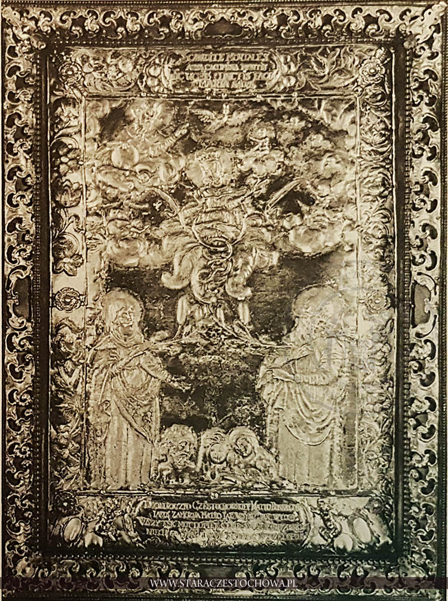

Modlitwa południowa Anioł Pański

Anioł Pański
Modlitwa południowa Anioł Pański
P. Anioł Pański zwiastował Pannie Maryi,S. I poczęła z Ducha Świętego.
P. Zdrowaś Maryjo, łaski pełna, Pan z Tobą, błogosławionaś Ty między niewiastami i błogosławiony owoc żywota Twojego Jezus.
S. Święta Maryjo, Matko Boża, módl się za nami grzesznymi teraz i w godzinę śmierci naszej. Amen.
P. Oto ja służebnica Pańska,
S. Niech mi się stanie według słowa Twego.
P. Zdrowaś Maryjo, łaski pełna, Pan z Tobą, błogosławionaś Ty między niewiastami i błogosławiony owoc żywota Twojego Jezus.
S. Święta Maryjo, Matko Boża, módl się za nami grzesznymi teraz i w godzinę śmierci naszej. Amen.
P. A Słowo stało się Ciałem,
S. I zamieszkało między nami.
P. Zdrowaś Maryjo, łaski pełna, Pan z Tobą, błogosławionaś Ty między niewiastami i błogosławiony owoc żywota Twojego Jezus.
S. Święta Maryjo, Matko Boża, módl się za nami grzesznymi teraz i w godzinę śmierci naszej. Amen.
P. Módl się za nami, święta Boża Rodzicielko
S. Abyśmy się stali godnymi obietnic Chrystusowych.
P. Módlmy się.
Prosimy Cię, Panie, wlej w nasze serca swoją łaskę, abyśmy, poznawszy za Zwiastowaniem Anielskim wcielenie Chrystusa Syna Twojego, przez Jego mękę i krzyż zostali doprowadzeni do chwały zmartwychwstania. Przez Chrystusa Pana naszego. [2]
Lub*
*Łaskę Twoją, prosimy Cię Panie, racz wlać w serca nasze, abyśmy, którzy za zwiastowaniem Anielskim wcielenie Chrystusa, Syna Twego poznali, przez mękę Jego i Krzyż do chwały Zmartwychwstania byli doprowadzeni. Przez Chrystusa Pana naszego. [3]
S. Amen.
P. Chwała Ojcu i Synowi i Duchowi Świętemu. (3x)
S. Jak była na początku, teraz i zawsze i na wieki wieków.
P. Amen.
P. Wieczny odpoczynek racz im dać Panie
S. A światłość wiekuista niechaj im świeci
P. Niech odpoczywają w pokoju wiecznym
S. Amen. [2]
Bibliografia
- https://www.czestochowa.simis.pl/_simZwzmiastem/004101-004489.jpg [dostęp 2026-02-26.]
- https://www.radiojasnagora.pl/a1-aniol-panski [dostęp 2026-02-26.]
- Droga do nieba. Modlitewnik opracowany przez kapłanów diecezji opolskiej i gliwickiej. Wyd. LX. Opole: Wydawnictwo Św. Krzyża, 1993. ISBN 83-85015-10-0